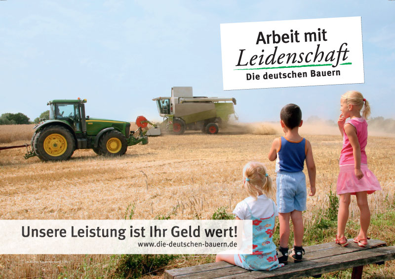

Kategorie: Der Landwirt als Dienstleister - "Der Mensch im Mittelpunkt" · 20 Beiträge (statisches Archiv)
einwohner10.07.2012, 21:03 Uhr
Kulturlandschaftsgestalter
[Anhang: <!-- ia0 -->dienst_s_DBV_1.jpg<!-- ia0 -->]
Es ist unstrittig, dass die strohgedeckten Häuser u. a. auf der Butterverpackung nicht mehr in jeder ausgeräumten Landschaft in MV zu finden sind.
Das Bild der Land- und Ernährungswirtschaft ist wirklich "über weite Strecken unrealistisch u. zum Teil sogar idealistisch verklärt" (<!-- m --><a class="postlink" href="http://www.mensch-und-land.de/ziele_2.php">http://www.mensch-und-land.de/ziele_2.php</a><!-- m -->).
Das ist ein Ergebnis der Dienstleister der Marketingwirtschaft.
Die Dienstleistung der Landwirte dagegen, die Gestaltung unserer Kulturlandschaft, sorgt für die wachsende Differenz zwischen Marketingwelt u. Realität:
Die jahrhundertealte Artenvielfalt der Wiesen u. Weiden ist z.B. stark rückläufig.
<!-- m --><a class="postlink" href="http://www.bund.net/themen_und_projekte/chemie/pestizide/gefahr_fuer_die_natur/lebensraeume/pestizidebedrohenvielfaltaufwiesenundweiden/">http://www.bund.net/themen_und_projekte ... undweiden/</a><!-- m -->
Infolge überpflügter aufgegebener Hofstellen u. Gärten sind historisch gewachsene Pufferzohnen an den Dorfrändern verschwunden.
Der Kontrast zwischen hochmotorisierter moderner Agrartechnik u. dörflicher Idylle ist direkt erlebbar.
Für eine bessere Akzeptanz der Kulturlandschaftsgestalter wäre eine besondere Dienstleistung der Landwirte unumgänglich: Im Rahmen des Greening sollten Schutzstreifen um die Dörfer in Abstimmung mit deren Einwohnern gepflanzt werden.

dienst_s_DBV_1.jpg
Landmaus11.07.2012, 19:24 Uhr
Re: Kulturlandschaftsgestalter
hallo Einwohner, da möchte ich doch gleich ausrufen; danke für die Schutzstreifen um unsere Dörfer, auch ein kleiner Zaun für die letzten Dorfbewohner und ein Schild mit der Aufschrift"Füttern verboten" wäre nicht schlecht...
Ich halte die Kulturlandschaft in ihrer zur Zeit bewirtschafteten Form für gut, produktiv und historisch gewachsene Landschaft. Vor die Wahl gestellt, würden viele Menschen ein gut bestelltes und gepflegtes Feld einer Unkrautwiese als Anblick vorziehen. Was hat eine als Greening deklarierte Fläche mehr, als ein mit Getreide, Kartoffeln, Mais oder Lupinen bestelltes Feld.
Ich halte die Zahlungen für die Landbewirtschaftung für gerechtfertigt an unsere Bauern denn über Generationen wurde von diesem Berufsstand unsere Landschaft geprägt und geschützt. Ich halte es auch für falsch, wenn sich Nichtfachleute in einem starken Umfang anmaßen, gegen das tiefe Gespühr der Landwirte und ihr Fachwissen romantische Ideale auf eines der wichtigsten Gebiete unserer Volkswirtschaft zu bringen.
Schwalbe12.07.2012, 15:14 Uhr
Re: Kulturlandschaftsgestalter
Ich kenne viele Leute, die einen Schutzstreifen um ihre Grundstücke begrüßen würden. Damit könnte man auch einen gewissen Abstand zwischen den eigenen Garten und die Giftspritze des Landwirtes bringen. Leider wird eben oft nicht nach guter fachlicher Praxis gedüngt oder gespritzt. Nach meinem Eindruck gibt es immer mehr Agrarindustrielle, die den Namen "Landwirt" gar nicht mehr verdienen. Bei diesen Leuten vermisse ich jegliches Gespür für ihre Umwelt. Fachwissen allein, ohne Verantwortungsgefühl für unsere Lebensgrundlagen- gesunde Böden, sauberes Wasser! usw. nützt da auch nichts. Subventionen sollten meiner Meinung nach an strenge Auflagen gebunden sein. Die Agrarpolitikpolitik in M-V trägt zur Entvölkerung ganzer Regionen bei, das können wir uns nicht leisten. Der ländliche Raum ist für alle da, jeder darf hier mitreden! Übrigens ist der Anteil der Landwirtschaft an der Bruttowertschöpfung in M-V lächerlich gering. Kleine landwirtschaftliche Betriebe in anderen Regionen Deutschlands erzielen wesentlich bessere Betriebsergebnisse.
Schwalbe12.07.2012, 15:14 Uhr
Re: Kulturlandschaftsgestalter
Ich kenne viele Leute, die einen Schutzstreifen um ihre Grundstücke begrüßen würden. Damit könnte man auch einen gewissen Abstand zwischen den eigenen Garten und die Giftspritze des Landwirtes bringen. Leider wird eben oft nicht nach guter fachlicher Praxis gedüngt oder gespritzt. Nach meinem Eindruck gibt es immer mehr Agrarindustrielle, die den Namen "Landwirt" gar nicht mehr verdienen. Bei diesen Leuten vermisse ich jegliches Gespür für ihre Umwelt. Fachwissen allein, ohne Verantwortungsgefühl für unsere Lebensgrundlagen- gesunde Böden, sauberes Wasser! usw. nützt da auch nichts. Subventionen sollten meiner Meinung nach an strenge Auflagen gebunden sein. Die Agrarpolitikpolitik in M-V trägt zur Entvölkerung ganzer Regionen bei, das können wir uns nicht leisten. Der ländliche Raum ist für alle da, jeder darf hier mitreden! Übrigens ist der Anteil der Landwirtschaft an der Bruttowertschöpfung in M-V lächerlich gering. Kleine landwirtschaftliche Betriebe in anderen Regionen Deutschlands erzielen wesentlich bessere Betriebsergebnisse.
LUMV23.07.2012, 15:24 Uhr
Re: Kulturlandschaftsgestalter
Ich habe mit einigem Interesse den Vorschlag zum "Greening" gelesen. Allerdings sind Grünstreifenanpflanzungen um Dörfer wohl nicht mit dem gemeint, was die EU-Kommission beabsichtigt. Es soll vielmehr mit drei europaweit anwendbaren und vor allem konrollierbaren Maßnahmen ein Mehrwert für die Umwelt geschaffen werden. Es geht - vereinfacht ausgedrückt - um ein Mindestmaß an Fruchtfolgegestaltung, um die Erhaltung des Dauergrünlandes und darum, mindestens 7 Prozent der landwirtschaftlichen Fläche (außer Grünland) als ökologische Schwerpunktfläche auszuweisen und entsprechend nachhaltig zu bewirtschaften, beispielsweise Randstreifen an Gewässern, wo nicht gespritzt und nicht gedüngt wird. An diese Greening-Maßnahmen sollen künftig 30 Prozent der Direktzahlungen, die ein Betrieb erhält, gebunden werden. Verstößt er dagegen oder nimmt er nicht teil, dann soll auch der übrige Teil der Direktzahlungen in den Folgejahren gekürzt oder gar gänzlich gestrichen werden. Es geht also darum, die öffentlichen Gelder für die Landwirte an möglichst überall in Europa anwendbare Leistungen zu knüpfen. Das mag unterschiedlich beurteilt werden, je nach Standpunkt, aber es geht insgesamt in die richtige Richtung.
einwohner24.07.2012, 07:39 Uhr
Re: Kulturlandschaftsgestalter
Der Zweck meines Beitrags war die Problematisierung des Kontrastes zwischen Sein und Schein auf dem Lande.
Was die EU-Kommission wirklich beabsichtigt, ist da vielleicht nicht gänzlich deckungsgleich. Aber selbst EU-Agrarkommissar Dacian Ciolos warnte vor einer unglaubwürdigen Reform, mit der man die Öffentlichkeit kaum noch von der Notwendigkeit der Agrarsubventionen überzeugen könne.
Als Einwohner unseres schönen Landes habe ich versucht, angedachte Rahmenbedingungen (wie das Greening) in Bezug zur derzeitigen Lebensrealität neuer Bevölkerungsgruppen auf den Dörfern zu bringen. Dabei ging es mir in erster Linie nicht einmal um die Subventionszahlungen für die gewaltigen Ländereien sondern nur um die ökologische 7%-Hürde, die von den Agrarpolitikern gerne gemieden wird.
Es geht - vereinfacht ausgedrückt - um ein Mindestmaß an Fruchtfolgegestaltung, um die Erhaltung des Dauergrünlandes und darum, mindestens 7 Prozent der landwirtschaftlichen Fläche (außer Grünland) als ökologische Schwerpunktfläche auszuweisen und entsprechend nachhaltig zu bewirtschaften, beispielsweise Randstreifen an Gewässern, wo nicht gespritzt und nicht gedüngt wird. An diese Greening-Maßnahmen sollen künftig 30 Prozent der Direktzahlungen, die ein Betrieb erhält, gebunden werden... Das mag unterschiedlich beurteilt werden, je nach Standpunkt, aber es geht insgesamt in die richtige Richtung.
Ja, es geht in die richtige Richtung, wenn Schutzstreifen ohne Spritz und Dung, nicht nur als Randstreifen an Gewässern sondern auch um die Dörfer entstehen.
So können sich, ausgehend von der Artenvielfalt der Gartenlandschaften, neue ökologische Schwerpunktflächen entwickeln.
Denn nach dem Scheitern des Projektes einer Gartenakademie Mecklenburg-Vorpommern hatte Minister Backhaus im vergangenem Frühjahr verkündet: "Dies ändert jedoch nichts an meiner positiven Haltung gegenüber dem Projekt "Natur im Garten", von dem ich mir für Mecklenburg-Vorpommern eine große Ausstrahlungswirkung erwarte. Das Land wird sich deshalb weiter darum bemühen, dieses Projekt notfalls in anderer Trägerschaft umzusetzen."
Der neue Träger ist gefunden. Landschaftpflegeverband Mecklenburger Endmoräne e.V. hat einen Antrag über LEADERalternativ für 451.887,57 € gestellt. Vor diesem Hintergrund kann über Schutzstreifen um Dörfer neu nachgedacht werden.
Akzeptanz beginnt mit Akzeptanz.
LUMV24.07.2012, 13:49 Uhr
Re: Kulturlandschaftsgestalter
Hallo Kulturlandschaftsgestalter, jetzt verstehe ich den Gedanken, den Du formuliert hast, besser. Dennoch ist es immer auch eine Eigentumsfrage, selbst wenn Dörfer mehr "grün" um sich herum wollten, die Flächen sind ja meist nicht einfach frei verfügbar. Die größten Flächennutzer sind nun einmal die Landwirtschaftsbetriebe im Haupt- und Nebenerwerb von denen wir derzeit 4.725 im Land haben. Ohne sie geht eine Pflege unserer Kulturlandschaft nicht. Andererseits muss auch auf der Seite der Bewirtschafter eine größere Bereitschaft erzeugt werden, naturschutzfachlich mehr zu tun. Im Sternberger Endmoränengebiet - auch ein Landschaftspflegeverband - läuft dazu derzeit gerade ein interessantes Projekt, wo betriebsbezogen Flächen erfasst bzw. ausgewiesen werden, auf denen jetzt schon Naturschutz stattfindet (z.B. FFH-Gebiete, Vogelschutz, Gewässerschutz, Biberschutz) oder die sich für den Natur- und Artenschutz besonders eignen. Dabei wird einerseits deutlich, dass es in den Betrieben oft noch an Wissen und knowhow fehlt, wie man Naturschutz und betriebswirtschaftliche Belange in Einklang bringen kann und anderseits auch schon sehr viel geleistet wird, ohne groß darüber zu reden. Übrigens nahezu ein Drittel unserer Landesfläche unterliegt europäischem Naturschutzstatus, soviel wie in keinem anderen Bundesland. Das heißt längst nicht, dass es nicht noch viel zu tun gäbe, aber es liegt eben auch nicht alles im Argen.
einwohner24.07.2012, 14:21 Uhr
Re: Kulturlandschaftsgestalter
Hallo LUMV ( ist das eine Abkürzung für das landwirtschaftliche Umweltministerium?), die größten Kulturlandschaftsgestalter sind bei uns in jedem Fall die Landwirtschaftsbetriebe im Haupt- und Nebenerwerb. Die Eigentumsfrage (incl. langfristige Pachtverträge) bilden dafür die Grundlage u. die neue EU-Regelung schafft den Anreiz, auf diesen Flächen ökologisch sinnvol so zu agieren, dass Subventionen nicht versiegen. Landwirte, welche die Interessen betroffener Einwohner nicht aus den Augen verlieren, haben langfristig bessere Überlebenschancen
in der modernen Gesellschaft, die nicht nur die Möglichkeiten des Informationsfreiheitsgesetzes ausschöpfen könnte.
Ja, es liegt noch nicht alles im Argen.
Landmaus25.07.2012, 10:42 Uhr
Re: Kulturlandschaftsgestalter
hallo Einwohner, sicher kann ich noch nachvollziehen, wenn sich jemand Streifen um die Dörfer ohne Chemie wünscht, aber warum ohne Dung? Das ist doch nun wirklich der gesündeste Dünger, den man Pflanzen zugestehen muß. Wer gegen Gülle ( Wasser + Exkremente-Gemisch) und Stalldung ( Kot+Harn+Stroh Gemisch) ist, der muß sich selber fragen, womit bitte sollen die Pflanzen denn ernähret werden? Nur mit Luft und Regen geht das nicht. Selbst Verbraucher, die der Produktion von Nahrungsmitteln schon sehr fern sind, können sich doch vorstellen, dass man auch seine Haustiere mit Futtermitteln, die Mineralien , Spurenelemente, Proteine und sonstige Stoffe enthalten, ernähret. Und nichts anderes ist das auch bei Pflanzen. Die brauchen ebenfalls die unterschiedlichsten Stoffe, um zu wachsen. Also bitte bei dem entrüsteten Sturm auf pflanzengerechte Mengen von Gülle nicht nur an das eigne Näschen denken sondern auch daran, dass man hier von natürlichen Nährstoffen für unsere Ackerkulturen spricht.
LUMV25.07.2012, 10:48 Uhr
Re: Kulturlandschaftsgestalter
Hallo Einwohner (sorry, habe gestern falsche Anrede benutzt). Ja, LUMV steht für Ministerium für Landwirtschaft, Umwelt und Verbraucherschutz. Bin also einer von denen, die an der Diskussion interessiert sind, möchte mit diskutieren, aber nicht dominieren. Würde mich übrigens freuen, wenn in diesem Forum tatsächlich auch mal über Dienstleistungen gesprochen würde, die Landwirte erbrigen könnten, jenseits von Ackerbau und Viehzucht. Also mehr in Richtung ländliches Unternehmertum.
Viele Leute beklagen die soziale Lage und die wirtschaftliche Situaton von Gemeinden im lädlichen Raum. Der demografische Wandel führt dazu, dass wir schon bald noch viele weniger und im Schnitt noch viel älter sind. Zuzug ist eher die Ausnahme und auch dann sind es meist ältere Menschen, die hierher ziehen (wegen der Natur und der Ruhe). Also sind die Landwirtschaftsbetriebe (große und kleine) oftmals die einzigen nennenswerten Unternehmen im Dorf...müssten oder könnten sie dann nicht neue Geschäftsfelder erschließen. Also neben Hofläden oder Tourismus auch Basisdienstleistungen für die Leute im Dorf...würden die Landwirte dann nicht eine ganz neue Rolle ausfüllen können und an Akzeptanz gewinnen?
Das sollte in diesm Forum auch besprochen werden, vor allem von Landwirten selbst..die vermisse ich...sind aber wohl alle in der Ernte?! -:)
Landratte25.07.2012, 13:51 Uhr
Re: Kulturlandschaftsgestalter
In der DDR wurde per Flugzeug gedüngt. Da spielten Grenzen keine Rolle.
Der Segen war für alle da u. ist noch heute im Grundwasser präsent.
Und die dazugehörige Ideologie ist auch noch nicht restlos abgebaut.
Schwalbe25.07.2012, 14:52 Uhr
Re: Kulturlandschaftsgestalter
@LUMV: Nicht nur der demografische Wandel, sondern auch die agrarindustriellen Strukturen und deren Förderung und Bevorteilung durch die Landesregierung führen zu Einwohnerverlusten im ländlichen Raum. Diese Betriebe sind wohl nennenswerte Unternehmen, wenn man ihre schiere Größe betrachtet, aber sie schaffen keine Beschäftigung und sind verstärkt auf Subventionen angewiesen. Sie werden auch keine Hofläden eröffnen...was soll dort verkauft werden? Raps? Getreide? Mais? Ach nein, der ist ja für die Biogasanlage. Es werden doch meist Marktfrüchte angebaut. Oder Fleisch frisch aus der Massentierhaltung? Urlaub auf dem Bauernhof mit Hofladen findet man meist nur bei kleinen und mittelständischen bäuerlichen Betrieben, und diese Betriebe besitzen hier Akzeptanz. Es gibt nur immer weniger davon, verdrängt von der Agrarindustrie.
einwohner25.07.2012, 21:17 Uhr
Re: Kulturlandschaftsgestalter
@LUMV: Urlaub auf dem Bauernhof mit Hofladen findet man meist nur bei kleinen und mittelständischen bäuerlichen Betrieben, und diese Betriebe besitzen hier Akzeptanz. Es gibt nur immer weniger davon, verdrängt von der Agrarindustrie.
Die böse Agrarindustrie wurde nach der Wende abgewickelt. Drei Buchstaben sind in Vergessenheit geraten (KIM). Kombinate Industrieller Mast verschwanden unmerklich.
Inzwischen fordert die Deutsche Agrarforschungsallianz (DAFA) in einem Strategiepapier die Entwicklung gänzlich neuer Produktionssysteme in der Schweine- und Geflügelhaltung.
<!-- m --><a class="postlink" href="https://www.schweine.net/dafa_bald_grundlegend_neue_schweinehaltung.html">https://www.schweine.net/dafa_bald_grun ... ltung.html</a><!-- m -->
20 Mio Euro soll die Forschung pro Jahr kosten.
Ich glaube nicht, dass davon kleine und mittelständische bäuerliche Betriebe provitieren können.
einwohner25.07.2012, 21:17 Uhr
Re: Kulturlandschaftsgestalter
Schwalbe hat geschrieben:
@LUMV: Urlaub auf dem Bauernhof mit Hofladen findet man meist nur bei kleinen und mittelständischen bäuerlichen Betrieben, und diese Betriebe besitzen hier Akzeptanz. Es gibt nur immer weniger davon, verdrängt von der Agrarindustrie.
Die böse Agrarindustrie wurde nach der Wende abgewickelt. Drei Buchstaben sind in Vergessenheit geraten (KIM). Kombinate Industrieller Mast verschwanden unmerklich.
Inzwischen fordert die Deutsche Agrarforschungsallianz (DAFA) in einem Strategiepapier die Entwicklung gänzlich neuer Produktionssysteme in der Schweine- und Geflügelhaltung.
<!-- m --><a class="postlink" href="https://www.schweine.net/dafa_bald_grundlegend_neue_schweinehaltung.html">https://www.schweine.net/dafa_bald_grun ... ltung.html</a><!-- m -->
20 Mio Euro soll die Forschung pro Jahr kosten.
Ich glaube nicht, dass davon kleine und mittelständische bäuerliche Betriebe provitieren können.
Schwalbe26.07.2012, 12:30 Uhr
Re: Kulturlandschaftsgestalter
Ja, das ist die große Frage. So ganz genau werden die Pläne der DAFA noch nicht erläutert. Auf alle Fälle brauchen wir nicht mehr Fleisch, und die Ressourcen unserer Welt geben auch nicht mehr her.
LUMV30.07.2012, 14:47 Uhr
Re: Kulturlandschaftsgestalter
Die Auffassung von "Schwalbe" teile ich nicht, es gibt 4.725 Landwirtschaftsbetriebe in MV. Davon 3.949 sogenannte "natürliche Personen", also Einzelunternehmen mit einer durchschnittlichen Betriebsgröße von 171 Hektar. Insgesamt bewirtschaften diese Betriebe fast 60 Prozent der landwirtschaftlichen Fläche des Landes. Sowohl ihre Anzahl als auch die Wirtschaftsfläche hat in den letzten Jahren zugenommen. Und trotzdem nahm die Anzahl der landwirtschaftliche Arbeitskräfte weiter ab. Sie liegt jetzt um die 21.000, ohne Saisonarbeitskräfte. Es ist also beileibe nicht so, dass kleinere Landwirtschaftsbetriebe mehr Arbeitsplätze schaffen würden. Ich kenne GbR, wo Vater und Sohn auf 300 Hektar allein reinen Marktfruchtbau betreiben und davon sehr gut leben können. Und ich kenne Genossenschaften von über 2.000 Hektar mit fast 40 Beschäftigten, Marktfruchtbau und Viehhaltung, Lehrausbildung, eigener Betriebsküche, Werkstatt uvam. Will sagen, es gibt viel mehr als schwarz und weiß. Der demografische Wandel vollzieht sich in MV und vielen anderen entlegenen ländlichen Gebieten in Deutschland und Europa, weil junge Menschen insgesamt "im Leben auf dem Lande kaum mehr Erfüllung finden". Vergl. Studie Berlin-Institut "Die Zukunft der Dörfer" 2011, S.4. Da das in Ost und West gleichermaßen geschieht, hat es ursächlich nichts mit der Art der landwirtschaftlichen Produktion zu tun. Aber egal wie, Landwirtschaftsbetriebe können und sollten inm Lichte des demografischen Wandels künftig mehr tun, als sich um ihr "Kerngeschäft" kümmern.
Schwalbe19.08.2012, 13:20 Uhr
Re: Kulturlandschaftsgestalter
@LUMV:
„Im Agrarland Mecklenburg-Vorpommern gab es 2007 5432 landwirtschaftliche Betriebe, im Industrieland Nordrhein-Westfalen 47511. Die agrarische Fläche war in Nordrhein-Westfalen mit 1503200 ha nur wenig größer als in Mecklenburg-Vorpommern mit 1355800 ha. Mit 144600 Beschäftigten in der Landwirtschaft übertraf Nordrhein-Westfalen Mecklenburg-Vorpommern (28100) um das Fünffache.“ (Stat. Jahrb. MV 2008, S.462, 463) „Stärken und Schwächen des ländlichen Raumes in Mecklenburg-Vorpommern“ Prof. Dr. Helmut Klüter
„Auswertungen für Marktfruchtbetriebe für die Jahre 2002 bis 2004 in ganz Deutschland belegen, dass bayrische Betriebe und solche in Nordrhein-Westfalen im Durchschnitt Hektargewinne um 500 € realisieren, ostdeutsche Familienbetriebe solche von 200 €, juristische Personen in der ostdeutschen Landwirtschaft hingegen von nur 34 € (1). Zieht man die EU-Agrarsubventionen mit rund 300 €/ Hektar von den Hektargewinnen ab, so realisieren bayrische oder westfälische Betriebe noch Gewinne von rund 200 Euro/ Hektar, die großen, juristisch verfassten Agrarbetriebe im Osten kommen ohne Subventionen auf Verluste von rund 270 Euro/ Hektar. Die vorgeblich so wettbewerbsfähigen großen Betriebe sind also in viel stärkerem Umfang auf die Agrarsubventionen angewiesen als die Familienbetriebe. Bereits vor der Wende beschrieb der langjährige Leiter des Frankfurter Instituts für ländliche Strukturforschung die systematische Benachteiligung bäuerlicher Familienbetriebe: „In allen agrarpolitischen Machtkämpfen der letzten hundert Jahre wurde der Bauer vorgeschoben, um bestimmte Hilfen für die Landwirtschaft durchzusetzen, von der Osthilfe in den zwanziger Jahren bis zu den Subventionen von heute. Diese aber kommen der Masse kleinerer und mittlerer Familienbetriebe am wenigsten zugute. Sie vergrößern vielmehr die Gewinne in Handel, Genossenschaften, Banken und Agrarindustrie, schaffen Differentialrenten für die ohnehin schon wohlhabenden größeren Landwirte. Der Bauer wird praktisch betrogen, gerade noch am Tropf gehalten, bis dann mit seiner miserablen Lage wieder neue Hilfen gefordert werden können.“ (2) „Landwirtschaftliche Entwicklung in Ostdeutschland und das ostdeutsche Agrarkartell- Politik für bäuerliche Landwirtschaft sieht anders aus“ PD Dr. Jörg Gerke
(1) top agrar (2006), Ausgabe 6
(2) Hermann Priebe (1985): Die subventionierte Unvernunft Siedler-Verlag, Berlin
hartmut12.09.2012, 00:29 Uhr
Re: Kulturlandschaftsgestalter
Ich könnte mir vorstellen, daß Landwirte die sich von Agrarindustriellen unterscheiden möchten Anreize für Junge Leute schaffen indem sie z.B. die Ausgeräumte Landschaft mit Hecken und mit Bäumen bepflanzten Wanderwegen gestalten, Damit wird die Bodenkrume nicht mehr der Desertifikation preisgegeben und es gibt weniger Autounfälle auf Autobahnen durch Sandstürme. Die Kulturlandschaft die nur noch aus Wüste besteht ist eine fremde Kultur in der kein Mensch mehr leben möchte, Die Vernichtung von Bodenwerten ist nicht enkeltauglich und sollte nicht mehr mit Subventionen die sich an der Grösse der Betriebe orientieren belohnt werden. Ich als junger Mensch wünsche mir mehr Dialoge wie diesen hier mit regionalen, bewusst agierenden Landwirten, denn ich glaube die Wirtschaftlichkeit von kleineren Betrieben nach Abzug des Subventionsfaktors gilt als offensichtlich. Darum wird es eine natürliche Auslese von nicht Zukunftsorientierten agrounternehmen geben, jenen nämlich die immernoch an Wüstenkulturlandschaft arbeiten.
mira_coolix30.11.2012, 18:28 Uhr
Re: Kulturlandschaftsgestalter
quote="einwohner"]Problematisierung des Kontrastes zwischen Sein und Schein auf dem Lande.
Wer die Musik bezahlt (Steuerzahler/Wähler), bestimmt auch was gespielt wird. Auf dem Lande und in der Stadt.
Nicht nur auf der Butter- und Milchpackung auch in den operationellen Programmen: Blühstreifen mit hübsch blühenden, für Touristen zu fotografierenden und am besten auch gern von bevorzugt zu jagendem Wild zu fressenden Arten, Ackerschonstreifenprogramme auf mini Flächen werden von uns als Steuerzahlern bezahlt. Vielleicht als eine Art Kosmetik oder Beruhigungspille und als Ablenkfütterungen für Wildkrautbiologen in Bezug auf die Direktbeihilfen, die für flächendeckendes Ausbringen von grundwasser-, boden- und gesundheitsgefährdenden Pflanzenschutzmitteln und Pflanzennährstoffen durchgereicht werden.
Wenn in den Kommunen (kleinste erreichbare Steuerzahler- und Wählereinheit vor der Einzelperson) Karten mit der Lage der Greeningflächen verbindlich auszulegen oder gar bestimmte Nutzungen vor Agrarantragstellung mit der Gemeinde einvernehmlich abzustimmen wären,
z.B. Flächen für den Verzicht auf Pflanzenschutzmittelanwendung und Düngung und auch die Ausbringung von Gülle, Klärschlamm und PSM vorher per Aushang oder persönlicher Benachrichtigung lagemäßig und terminmäßig anzuzeigen wäre, entstünde sicher mehr Akzeptanz für Subventionen und negative Begleiterscheinungen hochproduktiver Landwirtschaft.
Da wo Bauern-, Gemeinde oder Kircheneigentum (oder Landeseigentum) vorhanden ist, das heute durch moderne Landwirtschaftsbetriebe bewirtschaftet wird, kann jeder Flächeneigentümer als Verpächter sein eigenes Greening im Pachtvertrag festlegen:
ich verpachte Dir meine Fläche nur weiter, wenn Du z.B.:
keinen Mais anbaust
kein Glyphosat anwendest
Biobauer bist
Grünland als solches bestehen lässt
(k)eine Biogasanlage hast
deine Tiere nach meinen Prämissen behandelst
den Wasserstand unverändert lässt.
Da wo Fördermittel für Investitionen verteilt werden:
Ich fördere Deine Biogasanlage nur, wenn Du mit der Abwärme zu dauerhaft günstigen Konditionen unser Dorfgemeinschaftshaus/ unsere Schule/unser Altenheim versorgst.
Flächendeckend ökologisch vernünftige Greeningvorgaben von der EU/unserer Regierung/Verwaltung mit harten, für jeden einwohner eindeutigen, deutlich sichtbaren und transparenten Kriterien statt Gartenprojekte und Schutzstreifen um einzelne landschaftspflegerisch durchgestylte, ländliche Idylle vortäuschende Vorzeigedörfer!
Sauberes Trinkwasser und gesunde Grundnahrungsmittel vor Ort verfügbar machen als operationelles Ziel für eine (geförderte) Landwirtschaft statt Stiefmütterchen- und Forsythienbeete oder eine besonders hübsche Streuobstwiese um mein Dorf!
einwohner02.12.2012, 23:35 Uhr
Re: Kulturlandschaftsgestalter
mira_coolix hat geschrieben:
Da wo Bauern-, Gemeinde oder Kircheneigentum (oder Landeseigentum) vorhanden ist, das heute durch moderne Landwirtschaftsbetriebe bewirtschaftet wird, kann jeder Flächeneigentümer als Verpächter sein eigenes Greening im Pachtvertrag festlegen:
ich verpachte Dir meine Fläche nur weiter, wenn Du z.B.:
keinen Mais anbaust
kein Glyphosat anwendest
Biobauer bist
Grünland als solches bestehen lässt
(k)eine Biogasanlage hast
deine Tiere nach meinen Prämissen behandelst
den Wasserstand unverändert lässt.
Ja, schön wäre es, wenn die Flächeneigentümer als Verpächter Greening wirklich wollten.
Das sollte aber nicht nur an die Bewirtschaftung durch moderne Landwirtschaftsbetriebe gekoppelt werden.
Trotzdem sollten diejenigen, die mit ihrer Wirtschaftsweise Schäden verursachen, diese wieder ausgleichen.
Die Interessen der Betroffenen werden oft genug platt gemacht.
Der Rückgang der Artenvielfalt ist leider keine Fiktion. Pufferzonen zwischen gegensätzlichen Interessen schaffen neuen Lebensraum.
Durch die Blume gesprochen wird anders als in direkter Konfrontation.